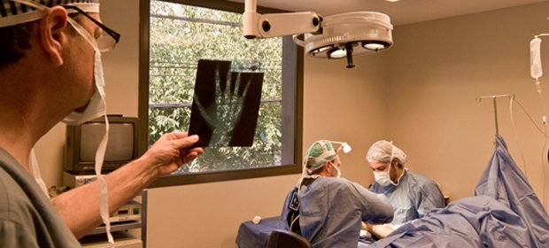

Staff médico
Traumatólogos dedicados a la mano y el miembro superior.
El equipo
Nuestros médicos
Médicos de ortopedia y traumatología, miembros titulares de la Asociación Argentina de Cirugía de la Mano y Reconstructiva del Miembro Superior.
- AM
Dr. Adolfo Martedi
- CM
Dr. Carlos Martedi
- AR
Dr. Ángel Rivero
- ML
Dr. Mauricio Luna
- DZ
Dr. Danilo Zapata
- CB
Dr. Carlos Bueno
- DY
Dr. Danilo Yapur Musale
Formación
Miembros de la sociedad de la especialidad
La Asociación Argentina de Cirugía de la Mano y Reconstructiva del Miembro Superior reúne a los cirujanos de mano del país. Nuestros médicos son miembros titulares.
En la clínica trabajamos con cirugía ambulatoria, técnicas mini-invasivas, artroscopía y microcirugía.

Turnos con el staff
Escribinos y coordinamos tu consulta con el médico que corresponda.